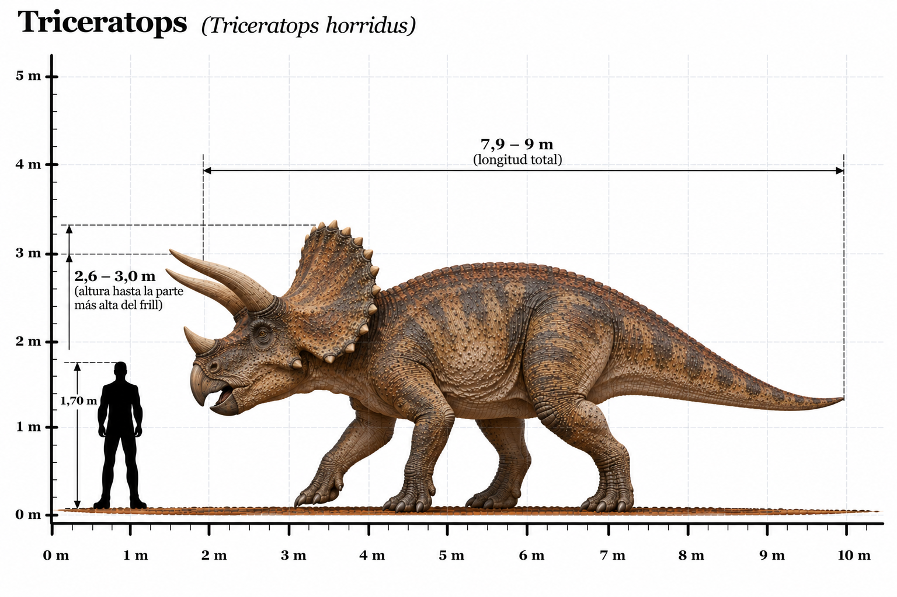

Triceratops horridus

El Triceratops horridus fue uno de los dinosaurios herbívoros más conocidos del Cretácico tardío. Habitó América del Norte hace aproximadamente entre 68 y 66 millones de años, poco antes de la extinción de los dinosaurios no avianos. Su nombre significa "cara de tres cuernos", en referencia a los dos grandes cuernos situados sobre los ojos y al cuerno más pequeño que presentaba sobre el hocico. Otra de sus características distintivas era una enorme gola ósea que se extendía desde la parte posterior del cráneo y protegía parcialmente el cuello. Los científicos consideran que los cuernos y la gola pudieron desempeñar funciones relacionadas con la defensa, el reconocimiento entre individuos y la exhibición. Poseía un cuerpo muy robusto, cuatro patas fuertes y una cabeza extraordinariamente grande, que podía superar los dos metros de longitud. Su boca terminaba en un pico córneo, mientras que sus numerosas baterías dentales estaban adaptadas para cortar y triturar vegetación resistente. Compartió su ecosistema con grandes depredadores como Tyrannosaurus rex. Algunos fósiles presentan marcas de mordeduras que demuestran que existieron interacciones entre ambos animales. Fue uno de los últimos grandes dinosaurios herbívoros que habitaron la Tierra antes de la extinción masiva del final del Cretácico.
- Grupo: Ceratopsio.
- Familia: Ceratopsidae (ceratópsidos).
- Subfamilia: Chasmosaurinae (chasmosaurinos).
- Período: Cretácico tardío (hace aproximadamente 68–66 millones de años).
- Alimentación: Herbívoro.
- Longitud: Aproximadamente 8–9 metros.
- Altura: Aproximadamente 2,5–3 metros hasta la parte superior de la gola.
- Localización: América del Norte (actuales Estados Unidos y Canadá).
